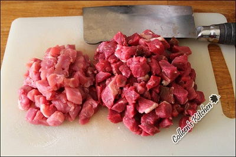
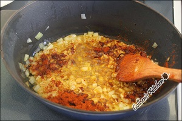
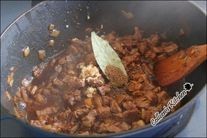
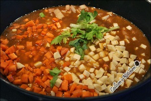
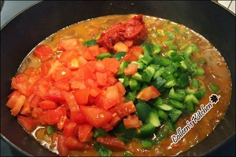
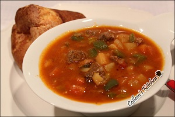
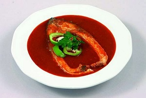
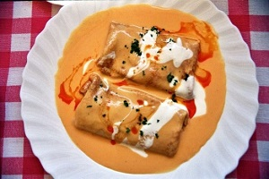

Hungary food
Great Hungary food
Food&dessert
-
1
gulyás[구야쉬]
소고기, 파프리카파우더, 케이언페퍼, 양파, 토마토, 케러웨이씨, 월계수잎, 당근 등등
-
2
HalásZlé[헐라스레]
파프리카, 잉어, 후추 등등
-
3
Palacsintá[팔라친타]
밀가루, 우유, 달걀, 소금약간, 차츠, 잼, 장식용 과일과 슈가파우더
gulyás
MAIN FOOD EXPLAIN
쇠고기와 양파, 양배추, 감자, 당근, 콩, 토마토 같은 야채류를 깍둑썰기해 파프리카 등의 향신료로 양념하여 끓인 헝가리식 수프 혹은 스튜
RECIPE
-
step1
1.재료들을 깍뚝썰기 한다.
-
step2
2.양파를 볶은후 파프리카파우더와 케이언페퍼를 넣고 잠시더 볶아준다.
-
step3
3.고기를 넣고 볶은후 다진마늘,캐러웨이씨 간것,소금,후추,셀러리이파리
월계수잎을 넣고 물을 부어서 1시간 정도 끓여준다. -
step4
4.채소를 넣고 센불로 끓인 후 채소 때문에
물이 더 필요하여 물을 원하는 묽기 만큼만 넣는다. -
step5
5.20분 정도 끓인후 채소가 다 익으면 토마토와 피망
토마토페이스트를 넣고 10분 정도 더 끓인다. -
Be completed!
구야쉬 완성!!!
HalásZlé and hungary food
MAIN FOOD EXPLAIN
강에서 잡히는 잉어에 뻐쁘리꺼로 맛을 내어 푹 끓인 요리로 빵과 함께 먹으며 우리의 매운탕과 비슷하며 크리스마스 때도 즐겨먹는 요리입니다.
RICTURE
-
step1
 -
step2

-
step3

-
step4

-
step5
Palacsintá
DESERT EXPLAIN
오스트리아식 이름으로 크레페 같이 얇은 팬케이크로 중동유럽에서 많이 먹는 음식이에요. 보통 송아지 고기가 안에 들어갑니다. 또한 얇은 밀전병에 신선한 과일을 넣고, 생크림, 초콜릿, 치즈 등을 끼얹어 먹는 헝가리의 대표적인 디저트입니다
RECIPE
-
step1

1.양파,파프리카,우민찌를 넣고 볶은 후
토마토홀과 파프리카파우더를 넣고 섞은 후 스톡과 크림을 넣고 졸여준다. -
step2

2.어느 정도 졸아들면 체에 걸러 소와 국물을 분리한다.
-
step3

3.남은 국물은 소스로 사용할 것.
농도있게 졸여준다. -
step4

4.잘 구운 크레페 반죽 위에 체에 걸러둔 소를 넣어서
접은후 소스를 부으면 -
step5
완성 !!!!!